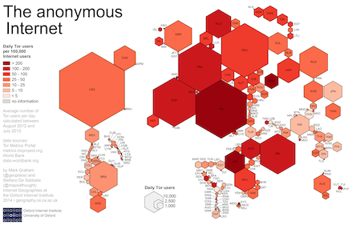

Home | Clients Relays Bridges Pluggable Transports Hidden Services | Bandwidth Performance Diversity | About
| Description: | The Oxford Internet Institute made a cartogram visualization of Tor users as compared to the overall Internet population per country. They used the average number of Tor users from August 2012 to August 2013 and put it in relation to total Internet users per country. Be sure to read up the details and their conclusions. |
| Author: | Oxford Internet Institute, University of Oxford |
| License: | Creative Commons Attribution-NonCommercial 3.0 Unported |
This material is supported in part by the National Science Foundation under Grant No. CNS-0959138. Any opinions, finding, and conclusions or recommendations expressed in this material are those of the author(s) and do not necessarily reflect the views of the National Science Foundation.
"Tor" and the "Onion Logo" are registered trademarks of The Tor Project, Inc.
Data on this site is freely available under a CC0 no copyright declaration: To the extent possible under law, the Tor Project has waived all copyright and related or neighboring rights in the data. Graphs are licensed under a Creative Commons Attribution 3.0 United States License.
Design prototype note: There are currently four types of metrics pages: graph, table, data, link. Each link page contains exactly one external link with optional thumbnail or full preview image and explanations. Adding new link pages should be easy.